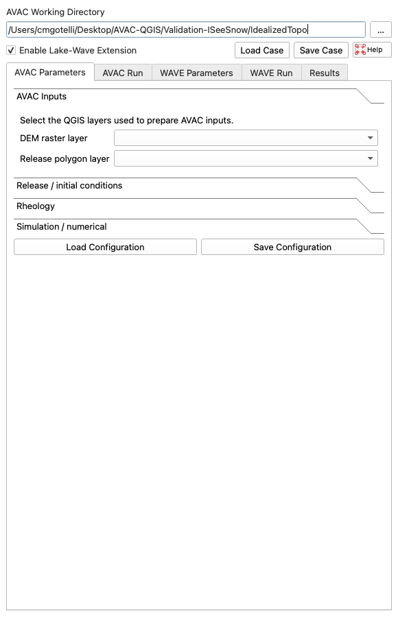

Avalanche-generated impulse waves in reservoirs
High-mountain reservoirs bring water storage, renewable-energy infrastructure, and communities into close proximity with steep, dynamic terrain. When an avalanche, rockfall, or landslide enters a reservoir, it suddenly displaces water and creates a short, energetic wave - an impulse wave. We are developing AVAC4QGIS to model this process from avalanche motion to reservoir response, with the ultimate aim of supporting scenario-based risk analysis for design and operational decisions.
A coupled mountain-hazard problem
Reservoirs in steep terrain are exposed to processes originating well beyond the dam itself. Avalanches, rockfalls, landslides, and glacier failures can enter a water body and generate impulse waves. The resulting hazard depends on the moving mass, its impact geometry, reservoir level and geometry, and the response of the shore and dam. These processes occur in mountain regions worldwide and must be assessed as coupled mass-movement and hydraulic problems (VAW, 2026).
Climate change adds further motivation for studying these coupled processes. Warming, glacier retreat, and changing periglacial conditions are altering the setting in which gravitational hazards occur, while hydropower systems remain central to water and energy infrastructure (NCCS, 2025). The direction and magnitude of change vary by process and location; the relevant question is therefore not a universal increase in avalanche activity, but how evolving terrain, snow, water bodies, and exposed infrastructure interact.
Switzerland illustrates this design context. The proposed enlargement of Lake Grimsel would raise the reservoir level by 23 m and increase storage from 90 to 170 million m³ (KWO, 2025). A reservoir enlargement changes the physical and operational configuration that a hazard assessment must consider: water levels, available freeboard, shore geometry, and the consequences of wave run-up or overtopping. This does not imply a specific avalanche scenario at Lake Grimsel; it illustrates why mass-movement-induced waves should be examined explicitly when high-mountain reservoirs are designed, upgraded, or operated.
From avalanche dynamics to reservoir response
The first task is to compute the avalanche: its release, acceleration, spreading, runout, depth, and velocity over complex terrain. These outputs define the conditions under which snow reaches the reservoir. The second task is to use that information to drive a hydrodynamic simulation of wave generation, propagation, run-up, and potential overtopping.
AVAC4QGIS is being developed to make this sequence explicit and reproducible. A user prepares and runs an avalanche scenario from a digital elevation model and release polygon in QGIS. Once an avalanche run is complete, the optional lake-wave extension uses its output as the input to a separate reservoir-wave scenario. The original avalanche simulation remains unchanged, allowing each stage to be examined independently and as part of the full chain.

AVAC4QGIS runs inside QGIS: avalanche setup, avalanche run, optional lake-wave setup, wave run, and results are organised in one workflow.
AVAC4QGIS
AVAC4QGIS builds on AVAC, the open-source avalanche-dynamics code developed by Christophe Ancey. The plugin integrates AVAC with QGIS so that spatial inputs, model parameters, runs, and results can be prepared and analysed within the same geographic information system (Ancey, 2022).
- Plug and play: the required runtime is packaged with the plugin, removing the need to configure AVAC, Clawpack, compilers, or a separate Python environment.
- Parallel execution: AVAC and the wave solver use OpenMP; the number of CPU cores is selected directly in the interface.
- Integrated spatial workflow: terrain, release areas, parameters, prepared cases, output maps, profiles, gauges, and animations remain associated with the QGIS project.
- Cross-platform delivery: native managed runtimes are being prepared for macOS, Linux, and Windows.
Next steps
Current work focuses on strengthening the verification of AVAC against analytical benchmarks and refining the transfer from avalanche output to reservoir-wave simulations. The objective is a transparent workflow for coupled-hazard scenarios, suitable for systematic risk analysis rather than a black-box prediction tool.